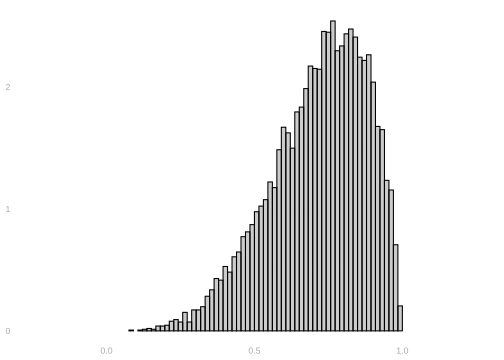
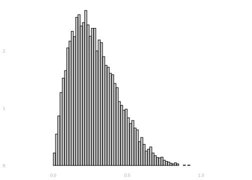
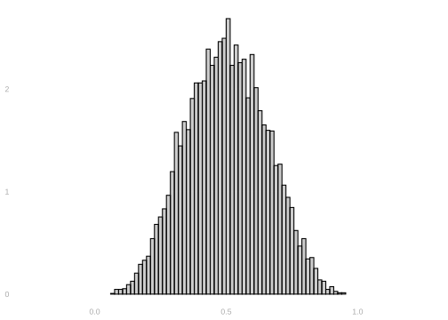
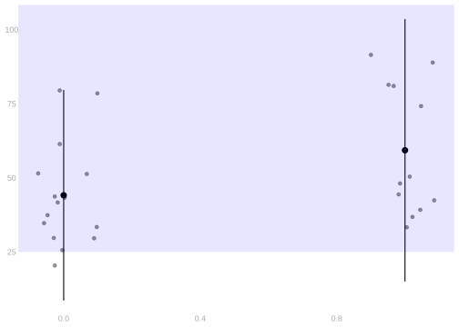

3 Homework: Basic Descriptive Statistics
$$ \newcommand{X}{} \newcommand{Y}{} % A hex digit after # inside a macro body is eaten by build-time expansion, so digit-leading hexes spell # via .
$$
This assignment is about summarizing a dataset numerically and visually: the mean, the standard deviation, and the frequency that something happens. You’ll calculate them by hand and in R, draw them, and ask each time whether the summary is a fair picture of what’s there.
Mean and Standard Deviation
Definitions
Below is a list of a thousand numbers, drawn as dots, with the two things we are about to define marked on it: their mean, and one standard deviation either side of it.
If you have a list of numbers X_1, X_2, \ldots, X_n, the mean (which we call \bar X), is the sum of the numbers divided by the number of numbers. \bar X = \frac{1}{n}\sum_{i=1}^n X_i
The standard deviation (which we call \hat\sigma) is a measure of how spread out the numbers are. It’s meant to be what it sounds like: the standard (usual) deviation (distance) of number in the list from the list’s mean.
\hat \sigma^2 = \frac{1}{n}\sum_{i=1}^n (X_i - \bar X)^2
Here to come up with one number describing what’s ‘standard’, instead of just taking the average, we do something different. We square our deviations, take the average of squares, and use the square root of the result. This still gives us a number that measures the size of ‘a deviation’ instead of ‘a squared deviation’ because we’ve taken the square root after averaging. But by averaging the squares, we’re effectively making bigger deviations ‘count more’ than smaller ones.1
In the figure above, we visualize a list of n=1000 numbers as purple dots. The x-coordinates are their values X_i and their y-coordinates are their index i in the list. The solid blue line indicates their mean \bar X and the dashed lines one standard deviation away from the mean in either direction, i.e., \bar X \pm \hat\sigma. We also include a histogram of the numbers to show the density of dots near different values of x. As you think about the following exercises, it might make sense to think about what a visualization like this might look like for the lists you’re working with.
Calculations
Properties
Visualization
Consider the three histograms below.



Supreme Court Justices
The Data
Start R and run this block to get the dataset we’ll be working with.
EMdata = read.csv("data/EMdata.csv")- This data is on 27 justices from the Warren (’53 - ’69), Burger (’69 - ’86), and Rehnquist (’86 - ’05) courts
- The data can be interpreted as a census of justices for the 1953 - 2005 era. Each row is a justice and each column is a variable. The column ‘justice’ is the name of the justice. We’ll be looking at a few other variables.
- CLlib: The percentage of votes in liberal direction for each justice in civil liberties cases
- party: the political party that nominated the justice (Republican =0, Democrat=1)
- ur: the justice is a member of an under-represented group, such as a racial or gender minority (under-represented group=1, not in under-represented group=0)
- To get you started, I’m going to plot a histogram of the percentage of liberal votes, identifying the mean with a vertical line. You may want to edit this code to answer future questions.
CL.histogram = ggplot(EMdata) +
geom_histogram(aes(x=CLlib, y=after_stat(density)),
bins=10, alpha=.3, color='black') +
geom_vline(aes(xintercept=mean(CLlib)),
color="blue") +
xlab("% Support for Liberal Position on Civil Liberties Cases (CLlib)")
CL.histogram
Breaking Down the Data
The next question asks for one plot per party, so you need a copy of the data with only those justices in it. Two bits of notation do that.
To get at one column, put a $ after the dataset’s name. EMdata$party is the list of 27 zeros and ones, one per justice, so EMdata$party == 0 is TRUE for each justice a Republican nominated and FALSE for the rest.
To get at some of the rows, put a condition in front of the comma. EMdata[EMdata$party == 0, ] keeps the rows where that condition is TRUE. What comes before the comma picks rows and what comes after it picks columns, and leaving the part after it empty means all of them. What comes back is a dataset just like EMdata with fewer rows in it, so anything you can do to EMdata you can do to that.
You have just drawn the two parties as separate histograms. Here they are in one picture instead: every justice as a dot, the parties side by side, and each party’s mean marked with a line reaching two standard deviations either side of it.
mean_sd = function(x,mult=1) {
data.frame(y=mean(x),
ymin=mean(x)-mult*sd(x),
ymax=mean(x)+mult*sd(x))
}
civil.liberties.plot = ggplot(EMdata) +
geom_point(aes(x=party, y=CLlib),
position=position_jitter(w=.1, h=0), alpha=.4) +
stat_summary(aes(x=party, y=CLlib), geom="pointrange",
fun.data=mean_sd, fun.args = list(mult=2)) +
xlab("Nominating Party") +
ylab("%Support for Liberal Position on CL Cases")
civil.liberties.plot
That scatter plot is put together the same way as the histogram was, out of two drawing pieces instead of one.
geom_point(aes(x=party, y=CLlib), position=position_jitter(w=.1, h=0), alpha=.4) draws one dot per justice.
x=partyandy=CLlibput the nominating party along the bottom and the percentage up the side.position=position_jitter(w=.1, h=0)shifts each dot sideways by a random amount of up to.1, so that justices nominated by the same party don’t land on top of one another.h=0leaves the height alone, because that one is the justice’s actual percentage and moving it would be a lie.alpha=.4is how opaque the dots are.
stat_summary(aes(x=party, y=CLlib), geom="pointrange", fun.data=mean_sd, fun.args=list(mult=2)) draws a summary on top of them.
- It collects the justices that share an
x, hands that group’sCLlibvalues to the function named infun.data, and draws whatever comes back. Which summary you get is decided entirely by that function. mean_sdis the function written just above. Given a list of numbers it returns a single row with three columns:yis their mean, andyminandymaxaremultstandard deviations below and above it.geom="pointrange"says how to draw that row—a dot aty, and a line running fromyminup toymax. The columns have to carry those names, because that is whatpointrangegoes looking for.fun.args=list(mult=2)is how the2reachesmean_sd, so the lines run two standard deviations either side of the mean rather than one.
ylab(...) is the label up the side, the way xlab(...) is the one along the bottom.
Frequencies, Indicators and Means
Introduction
Look at this list of numbers. 1, 2, 3, 4, 5
How many of those numbers are greater than or equal to 3? 3/5 of them are. We pronounce this ‘3 out of 5’, but if we take the division sign in there seriously, we get 3/5 = .6. .6—often we say, equivalently, 60%—is the frequency that one of those five numbers is greater than or equal to 3.
We’ve been talking a lot about means so far and there is a connection. Frequencies are means. Let’s think of the list above as a sample of 5 numbers: Y_1=1, Y_2=2, \ldots. And let’s define, in terms of these, a corresponding sample of zeros and ones, O_1 \ldots O_5.
O_i = \begin{cases} 1 & \text{ if } Y_i \ge 3 \\ 0 & \text{ otherwise } \end{cases}
We call these indicators: O_i indicates whether Y_i is greater than or equal to 3 by being one if it is and zero if it isn’t. And for our list specifically, the indicator list can be written as
O_1 = 0, \ O_2 = 0, \ O_3 = 1, \ O_4 = 1, \ O_5 = 1
What’s the mean of our indicators O_1 \ldots O_5? .6, right? That’s not a coincidence. The frequency that something happens is the mean of indicators that it does happen. Thinking this way will come in handy because we’ll talk about means a lot in this class and this lets us use all the same ideas to think about frequencies. We do this so often that we have a special notation for indicators. Instead of O_i, we’d usually write 1_{\ge 3}(Y_i) so we don’t have to remember the meaning of a new letter—it’s all there. Indicators aren’t just for something being greater than equal to something else. We could, for example, talk about the indicators 1_{=3}(Y_i) or 1_{<0}(Y_i). I’ll leave it to you to work out what those mean.
Writing indicators this way makes it clear that what we’re doing is evaluating a function at Y_i. A function that is defined like this. 1_{\ge 3}(y) = \begin{cases} 1 & \text{ if } y \ge 3 \\ 0 & \text{ otherwise } \end{cases} \qqtext{ for any value of $y$}
1_{=3} and 1_{<0} are, of course, also functions. We call them indicator functions.
Calculating Frequencies in R
The R code we tend to use to calculate frequencies uses these connections. Here’s one phrased exactly the way we’ve been talking about it, where we first evaluate the indicator function 1_{\ge 3} at the sample Y_1 \ldots Y_5, to get the indicator variables 1_{\ge 3}(Y_1) \ldots 1_{\ge 3}(Y_5), then take their mean to get the frequency we want.
Y = c(1,2,3,4,5)
ge.3 = function(x) { ifelse(x >= 3, 1, 0) }
freq.X.ge.3 = mean(ge.3(Y))
freq.X.ge.3- 1
- This is the list of numbers we’re talking about. Y_1 \ldots Y_n.
- 2
- This defines the indicator function 1_{\ge 3}
- 3
- This evaluates it to get the the indicator variables 1_{\ge 3}(Y_i) and takes their mean.
[1] 0.6And here’s what we’d usually write in practice. It’s more compact.
mean(Y >= 3)[1] 0.6Visualization
Drawing indicator functions into our data visualizations can help us get a sense of what they mean in the context of the data. In particular, it helps us identify cases where a lot of observations are just outside the region where the indicator is 1. Or just inside. This matters because coarsening loses that distinction: after we’ve merged the rows, the result doesn’t tell us who was just inside and who was far in. It also matters because it’s often effective to talk about frequencies—they’re simple and a lot of people feel comfortable with them—but saying things like ‘only 15% of people in Georgia live below the poverty line’ can be a way of concealing the truth if another 35% are just above it. We’ll be working with income data a few weeks from now. We’ll get a chance to see whether it’s possible to use frequencies to tell two different stories about the same reality.
In the plot below, the dots show the sample Y_1 \ldots Y_5 = 1 \ldots 5 we were talking about earlier. And the blue-shaded rectangle shows the indicator function 1_{\ge 3}. The indicator values 1_{\ge 3}(Y_1) \ldots 1_{\ge 3}(Y_5) are 1 for the points inside the rectangle and 0 for the points outside. The frequency we’ve been talking about is represented visually by the proportion of points inside this rectangle.
freq.data = data.frame(Y = c(1,2,3,4,5),
X = c(1,1,1,1,1))
ggplot(freq.data) +
geom_point(aes(x=X, y = Y)) +
annotate("rect", xmin = -Inf, xmax = Inf, ymax = Inf, ymin = 3,
alpha = .1,fill = "blue") - 1
- To draw a ‘scatter plot’ when we have Ys but no Xs, we need to make up some Xs. Here we’ve just used 1s so they all appear in one column.
- 2
- This is ‘ggplot’ for the indicator 1_{\ge 3}. More explicitly, it’s ggplot for the indicator 1_{\in [-\infty, +\infty] \times [3, +\infty]}, where [-\infty, +\infty] \times [3, +\infty] is an infinitely wide ‘rectangle’ that starts at 3 on the y-axis and goes up to infinity.

Exercises
All this—the R stuff and the visualizations — starts to get more useful when we have a larger list. We usually do. Let’s check that we’ve got all of this down by doing a few simple exercises using another list of five numbers, then move on to our supreme court data.
Now that we’ve got all this down, let’s think about the frequency a few things happen in the supreme court. Suppose I want indicators that support for liberal position on civil liberties cases among both parties is greater than or equal to 25%. Denoting percent of support as Y_i, these can be written as 1_{\ge 25}(Y_i) \qfor 1_{\ge 25}(y) = \begin{cases} 1 & \text{ if } y \ge 25 \\ 0 & \text{ otherwise.} \end{cases}
If you want to avoid writing a very small amount of code, go ahead and do it using this plot.
CLindicator25.plot = ggplot(EMdata) +
geom_point(aes(x=party, y=CLlib),
position=position_jitter(w=.1, h=0), alpha=.4) +
stat_summary(aes(x=party, y=CLlib), geom="pointrange",
fun.data=mean_sd, fun.args = list(mult=2)) +
annotate("rect", xmin = -Inf, xmax = Inf, ymax = Inf, ymin = 25, alpha = .1,fill = "blue") +
xlab("Nominating Party") +
ylab("%Support for Liberal Position on CL Cases")
CLindicator25.plot
What if we want to know the frequency that support for the liberal position exceeds 50% among justices nominated by Republicans? All we’ve got now is to do about the same thing with part of our sample — a subsample. The code below calculates the frequency. It’s the row-picking from before done to a single column rather than the whole table: Y[X==0] keeps the entries of Y where X is 0, the way EMdata[EMdata$party == 0, ] kept the rows.
Y = EMdata$CLlib
X = EMdata$party
mean(Y[X==0] >= 50)[1] 0.3333333And this code draws a plot to help us interpret it.
CLindicator50.repub.plot = ggplot(EMdata) +
geom_point(aes(x=party, y=CLlib),
position=position_jitter(w=.1, h=0), alpha=.4) +
stat_summary(aes(x=party, y=CLlib), geom="pointrange",
fun.data=mean_sd, fun.args = list(mult=2)) +
annotate("rect", xmin = -Inf, xmax = .5, ymax = Inf, ymin = 50, alpha = .1, fill = "blue") +
xlab("Nominating Party") +
ylab("%Support for Liberal Position on CL Cases")
CLindicator50.repub.plot
Usually we don’t really need to think at this level of subtlety to have the right intuition. Thinking ‘the usual deviation’ is enough. But it’s good to know what’s going on under the hood in case you do need it.↩︎
You may be slightly off. In particular, you may be off by a factor of \sqrt{26/27}. That’s ok. There are two conventions for calculating the sample standard deviation—one involves division by n and the other n-1. That’s a factor of 26/27 inside the square root, so it’s the square root of that factor in the standard deviation itself.↩︎